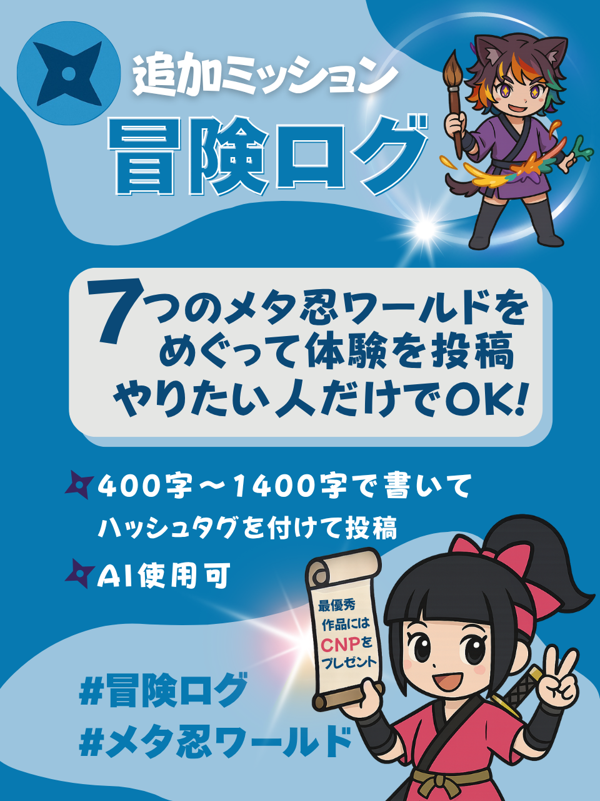

参加方法
メタ忍ワールドのスタンプラリーに参加して、CNGトークンや限定アイテムを手に入れよう！
-
各ワールドへ入室
プラットフォーム一覧から各メタバースの公式URLにアクセスし、ウォレットまたはSNSアカウントでログインします。初めて利用する方は、各プラットフォームの案内に従ってアカウントを作成してください。
ヒント： Sandbox、Rium、clusterなど複数のプラットフォームを利用するため、事前にアカウント登録しておくとスムーズです。
-
フォトスポットでスクショ📸

① スタンプラリー・ミッション（必須）：全メタ忍ワールドを巡ること & 各フォトスポットで記念撮影（スクショ）すること → 指定ハッシュタグ付きで X 投稿 ※投稿時は、他の参加者や第三者の個人情報（個人が特定できるものなど）が写り込まないようご注意ください。
#メタ忍ワールド #クリプトニンジャ咲耶 -
＋α「冒険ログ」ミッション
② 冒険ログ・ミッション（任意）：全角 400〜1,400 字の「冒険ログ」を X 投稿。内容は自由です。例：印象に残った場面、出会った人、操作に苦労した点、ショートストーリーなど。※体験を 3 分以内のオリジナル動画・楽曲にまとめ、音源の URL を添えて投稿する形でも参加できます。AI 使用可。冒険ログのみの参加はできません。冒険ログは複数投稿いただけますが、申請フォームには代表作 1 点のみご記入ください。
#冒険ログ #クリプトニンジャ咲耶 -
７ワールド制覇で報酬GET
全7ワールドのフォトスポットでの撮影のミッションの投稿が完了、「冒険ログ」ミッション（任意）の投稿が完了したら、7 月 19 日（土）以降に投稿URLをGoogleフォームに記入して提出します。確認後、スタンプラリーミッションのCNGトークンが配布されます。
申請フォーム（Google フォーム）提出要件
- 提出期間：7 月 19 日（土）0:00 JST 〜 7 月 23 日（水）23:59 JST（5 日間）
- 【全員必須】：各投稿 URL、FiNANCiE ユーザー名 など
- 【冒険ログで CNP を希望する方のみ必須】：ウォレットアドレス
- 【冒険ログでリアルグッズを希望する方のみ必須】：住所
- ※申請フォームでの報告はお一人様 1 回限りです。複数回申請された場合は最新の内容のみを有効とします。
- ※FiNANCiE ユーザー名を未入力の場合、CNG トークンは受け取れません。
※ ①（フォトスポット投稿）と ②（冒険ログ）の成果をセットで報告してください。②のみの申請はできません。
※ 申請フォームの段階ではウォレットアドレスや住所のご提供自体は不要です。当選された場合にご連絡し、必要事項をお伺いします。